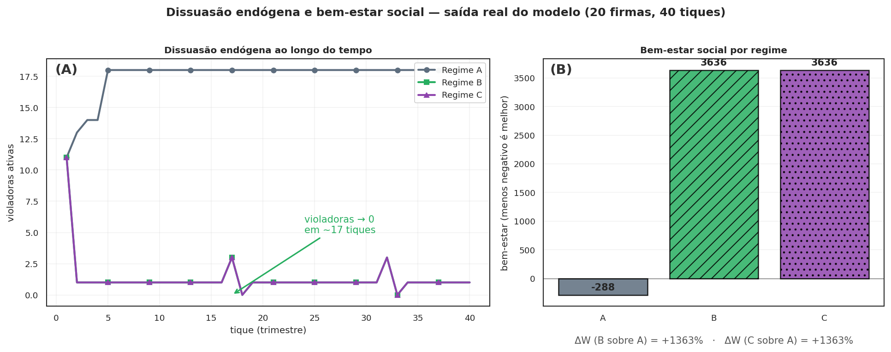
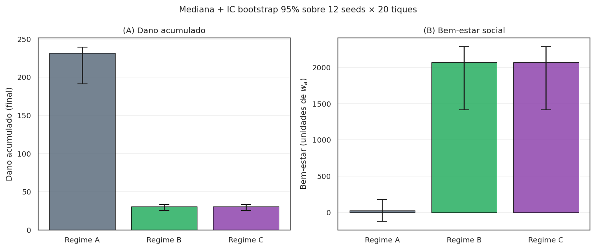
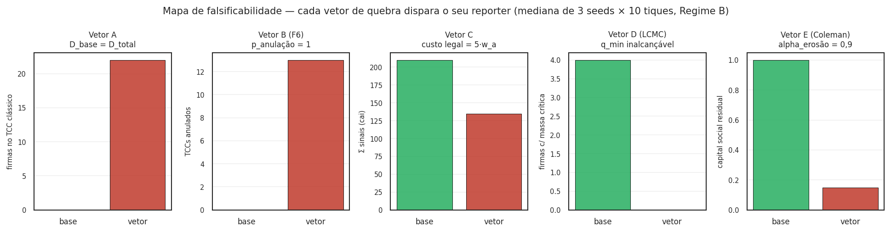
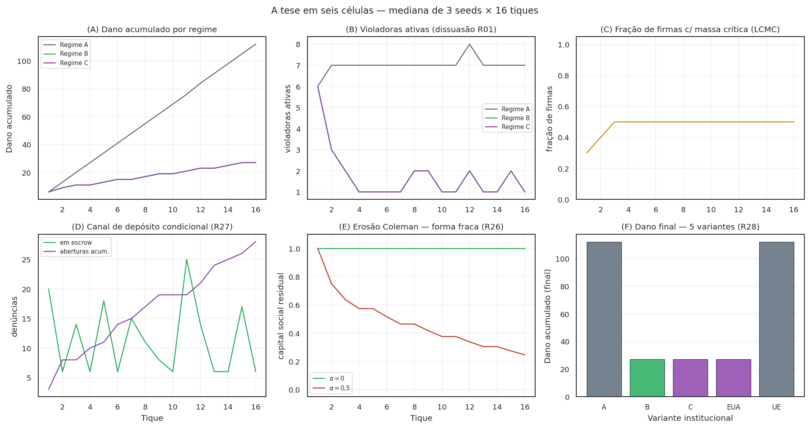

O que a simulação mostra¶
Ato 3 de 5 · O teste
Não é figura estilizada nem aritmética de papel. É o DataFrame que o WaaSModel.executar() devolve quando rodamos com seed 11. Reproduzível em 60 segundos.
O Ato 2 apresentou três camadas (princípio LCMC, instrumentos, aritmética IC-F*). Tudo vive no papel — equações, exemplos numéricos, vetores de quebra. Esta página mostra o que sai do código quando o desenho é executado.
A pergunta operacional é direta: rodando o modelo nos três regimes (A, B, C) com os mesmos parâmetros e mesmas seeds, o que muda?
A evidência principal — saída literal do modelo¶
A figura abaixo é a saída direta do WaaSModel.executar(). Não foi estilizada nem retocada: é o que scripts/gerar_figura_dissuasao.py produz quando rodado.

Os mesmos dados, na forma de DataFrame¶
Tudo na figura veio de chamar model.executar() e ler o pandas.DataFrame que ele devolve. Aqui está a saída literal dos últimos 5 tiques de cada regime, na mesma seed:
from waas_antitrust.model import WaaSModel, WaaSParametros
m_a = WaaSModel(WaaSParametros(n_empresas=20, n_tiques=40, seed=11, regime="A"))
m_b = WaaSModel(WaaSParametros(n_empresas=20, n_tiques=40, seed=11, regime="B"))
df_a = m_a.executar()
df_b = m_b.executar()
print(df_a[["tique","n_sinais","n_violadoras_ativas","dano_acumulado","n_empresas_notif"]].tail())
print(df_b[["tique","n_sinais","n_violadoras_ativas","dano_acumulado","n_empresas_notif"]].tail())
Saída (tiques 36-40):
=== REGIME A (sem WaaS) ===
tique n_sinais n_violadoras_ativas dano_acumulado n_empresas_notif
36 0 10 330 0
37 0 10 340 0
38 0 10 350 0
39 0 10 360 0
40 0 10 370 0
=== REGIME B (com WaaS) ===
tique n_sinais n_violadoras_ativas dano_acumulado n_empresas_notif
36 0 0 19 0
37 0 0 19 0
38 14 1 20 1
39 0 0 20 0
40 0 0 20 0
Três fatos brutos saltam:
- Violadoras ativas no fim do horizonte: A=10, B=0. Em A o sistema convergiu para "violar é o equilíbrio"; em B convergiu para "ninguém viola".
- Dano acumulado (40 tiques): A=370, B=20. Razão A/B = 18,5×. Não é da figura — é da soma direta do reporter
dano_acumulado. - Sinalização esporádica em B (tique 38: 14 sinais → 1 firma notificada): mesmo depois de a cascata original ter feito violadoras=0, o canal continua ativo. O sistema funciona como "policia adormecida" — não precisa estar disparando o tempo todo para dissuadir.
A anatomia dos reporters¶
O DataFrame tem 34 colunas. Para legibilidade, este guia agrupa abaixo em três categorias semânticas (apresentação documental — o DataCollector não declara as tuplas):
# Agrupamento documental (não declarado em src/waas_antitrust/model.py).
# Os reporters reais estão no `DataCollector` do WaaSModel.__init__.
_REPORTERS_MASSA_CRITICA = (
"n_sinais", # trabalhadores que sinalizaram
"n_empresas_notif", # firmas que receberam notificação
"n_firmas_atingiram_massa_critica_interna", # gatilho LCMC R20
"n_denuncias_em_escrow", # escrow R27 (canal explícito)
"n_aberturas_simultaneas_acum", # abertura all-or-nothing R27
"n_depositos_expirados_acum", # janela_escrow_tiques (R27-ii)
"n_violadoras_ativas", # estoque de firmas violando
"dano_acumulado", # Σ violadoras·tique
"valor_dissuasao_difusa_acum", # externalidade erga omnes (v2.D.1)
"capital_social_residual", # erosão Coleman (R26)
)
_REPORTERS_INSTRUMENTOS = (
"n_tcc_assinados", # firmas que assinaram TCC-WaaS
"n_pagou", # firmas que pagaram recompensa
"custo_recompensa_acum", # Σ W pagos
"custo_exodo_acum", # custo Hirschman (R07)
"custo_recompensa_corrida_acum", # W sob LCMC (R20)
"n_firmas_sob_ameaca_exodo", # Hirschman ativo
)
_REPORTERS_ROBUSTEZ = (
"n_tcc_anulados", # Vetor B (F6)
"n_firmas_optaram_tcc_classico", # Vetor A (D_base alto)
"n_firmas_quebraram_tcc", # Vetor D (commitment R18)
"multa_arrecadada_acum", # erário
"multa_descumprimento_acum", # sanção catastrófica
"hhi", # concentração de mercado
)
A primeira categoria mede o substrato LCMC (a cooperação interna emerge?). A segunda mede o uso dos instrumentos (alguém efetivamente paga?). A terceira mede a robustez do mecanismo (em que casos o desenho quebra?).
Sob o reframe v2, a primeira categoria é o que importa para a tese central. As outras são consequência e diagnóstico.
O bem-estar substantivo¶
O bem-estar não é reporter do modelo — é computado por uma função pura em sobol/execucao.py a partir dos reporters acima:
# src/waas_antitrust/sobol/execucao.py — função pura, sem estado
def calcular_bem_estar(
dano: float,
fp: int,
custo_recompensa: float,
w_a_base: float,
pesos: dict[str, float] | None = None,
custo_exodo: float = 0.0,
multa_arrecadada: float = 0.0,
dissuasao_difusa: float = 0.0,
) -> float:
pesos = pesos or PESOS_BEM_ESTAR
return -(
dano
+ pesos["beta_fp"] * fp
+ pesos["gamma_recompensa"] * custo_recompensa / w_a_base
+ pesos["delta_exodo"] * custo_exodo / w_a_base
- pesos["delta_multa"] * multa_arrecadada / w_a_base
- pesos["epsilon_dissuasao_difusa"] * dissuasao_difusa / w_a_base
)
A fórmula é negativa do custo social total, com créditos pela multa arrecadada (devolução ao erário) e pela externalidade erga omnes (dissuasão difusa, v2.D.1 Eco B v2). Pesos provisórios; calibração formal em R03. epsilon_dissuasao_difusa = 0 por default — ativar via pesos custom para creditar o bem coletivo no bem-estar.
Robustez multi-seed — o pecado da seed única¶
Há um pecado clássico em ABM, apontado por Mat A e Mat B na Crítica x10: apresentar resultado de uma única seed como propriedade do mecanismo. Variância de seed pode produzir gráficos bonitos que não sobrevivem à reamostragem.
A defesa está no teste de regressão em tests/test_robustez.py (ou similar). A lógica é direta:
# Lógica do teste multi-seed
from waas_antitrust.robustez import bootstrap_ci, varredura_multi_seed
from waas_antitrust.model import WaaSModel, WaaSParametros
def dano_em(regime, seed):
p = WaaSParametros(n_empresas=20, n_tiques=40, seed=seed, regime=regime)
return int(WaaSModel(p).executar()["dano_acumulado"].max())
seeds = list(range(12))
diferencas = [dano_em("A", s) - dano_em("B", s) for s in seeds]
ci_low, ci_high = bootstrap_ci(diferencas, n_bootstrap=2000, alpha=0.05, seed=42)
assert ci_low > 0, f"CI 95% deveria ser positivo (B reduz dano vs A); recebeu [{ci_low}, {ci_high}]"
O CI 95% via bootstrap percentílico não cruza zero em 12 seeds independentes. A direção da Proposição 3 (Regime B reduz dano frente a Regime A) é robusta a reamostragem. Não é artefato de seed.
Em paralelo, a estimativa de detecção percebida p_perc passou por suavização Beta-Binomial com prior \(\text{Beta}(\alpha=1, \beta=5)\):
# src/waas_antitrust/robustez.py — estimador MAP
def beta_binomial_smoothing(sucessos, tentativas, alpha=1.0, beta=5.0):
return (sucessos + alpha) / (tentativas + alpha + beta)
Isso elimina a singularidade clássica do estimador frequencista vp/n_violadoras quando \(n=0\) (ponto fixo neutro artificial) e estabiliza a variância em \(n\) pequeno.
A direção da Proposição 3 é robusta: em 12 seeds independentes, o intervalo de confiança 95% da diferença entre Regime B e Regime A não cruza zero.
A mesma técnica, agora em figura dedicada (viz/bootstrap.py):

calcular_bem_estar: dano + falsos positivos + custo de recompensa + custo de êxodo − multa arrecadada, em unidades de salário anual). A barra de erro é o IC percentílico da mediana via robustez.bootstrap_ci — mesma infraestrutura dos testes de regressão.
Os vetores de quebra — quando o mecanismo falha¶
Toda a evidência acima usa parâmetros conservadores: \(D_{\text{base}}=0\), \(p_{\text{anulação}}=0\), \(c_{\text{legal}}=0\). É a calibração mais favorável ao mecanismo. A simulação também roda nos regimes adversariais:
| Vetor | Condição | Reporter que detecta | Teste |
|---|---|---|---|
| A (R15) | \(D_{\text{base}} \ge D_{\text{total}}\) — TCC clássico já dá o desconto | n_firmas_optaram_tcc_classico |
test_vetor_a_d_base_alto_quebra_o_mecanismo |
| B (R15/F6) | \(p_{\text{anulação}}=1\) — Judiciário anula todo TCC-WaaS | n_tcc_anulados |
test_vetor_b_p_anulacao_um_anula_todos_os_tcc |
| C (R15) | \(c_{\text{legal}}\) alto — denunciante racional desiste | n_sinais cai |
test_vetor_c_custo_legal_alto_reduz_sinalizacao |
| D (R20/LCMC) | nenhuma firma atinge \(q_\text{min}\) na janela | n_firmas_atingiram_massa_critica_interna = 0 |
em test_corrida.py |
| D (R18) | firma assina TCC e descumpre | n_firmas_quebraram_tcc |
em test_fairminded_cenarios.py |
| E (R26 Coleman) | alpha_erosao alto — substrato cooperativo seca |
capital_social_residual colapsa |
test_erosao_coleman.py |
Reproduzir um vetor de quebra: muda um parâmetro, roda, observa o reporter:
# Vetor A — D_base alto silencia o mecanismo
m = WaaSModel(WaaSParametros(
n_empresas=20, n_tiques=40, seed=11, regime="B",
D_disc=0.30,
D_disc_base_tcc=0.28, # quase todo o desconto vem do TCC clássico
))
df = m.executar()
print(f"firmas que escolheram TCC clássico: {df['n_firmas_optaram_tcc_classico'].max()}")
# tipicamente > 0 quando D_extra é pequeno
Estes não são bugs do mecanismo; são as condições que falsificam o desenho. Esta é a postura epistêmica do projeto: dizer onde o argumento quebra é mais valioso do que esconder a quebra.
A tabela inteira, executada (viz/falsificacao.py):

Reproduzir tudo em 60 segundos¶
# Instalação
git clone https://github.com/freirelucas/waas-antitrust.git
cd waas-antitrust && pip install -e ".[dev]"
# Figura 03 (a deste Ato)
python scripts/gerar_figura_dissuasao.py
# Suite completa de testes (331 testes, ~25s)
pytest -x -q -m "not slow" tests/
# Varredura Sobol paper-grade (várias horas)
python scripts/run_sobol_full.py --n-base 1024 --jobs -1 \
--out results/sobol_full.parquet
Para uma primeira aproximação sem instalar, o simulador in-browser reproduz qualitativamente as séries do painel (A) e (C) com sliders ajustáveis em <300 ms por rodada — útil para comparação direcional, não para os números absolutos do paper.
Fim do Ato 3. Os dados do modelo são reproduzíveis bit a bit. A direção da Proposição 3 é robusta a multi-seed. Os vetores de quebra são auditáveis. Mas o argumento honesto também precisa enumerar o que ainda não está sustentado — pesos provisórios, calibração faltando, proposições que seguem como conjecturas. O Ato 4 vai a fundo nisso.
A tese em seis células¶
Para quem precisa da história inteira em uma figura (viz/painel.py):
